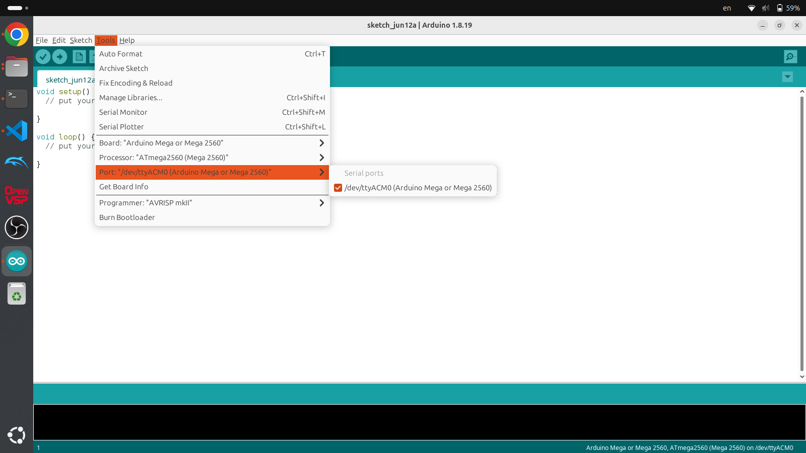
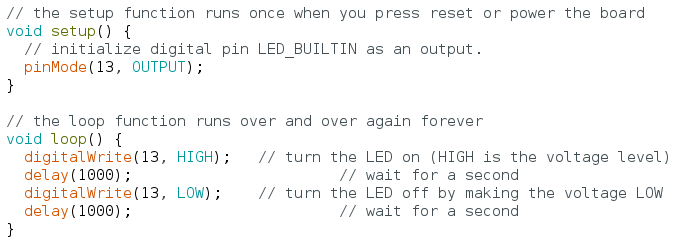
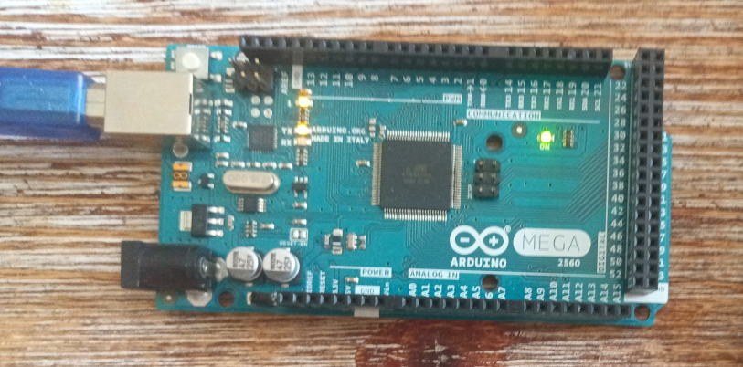
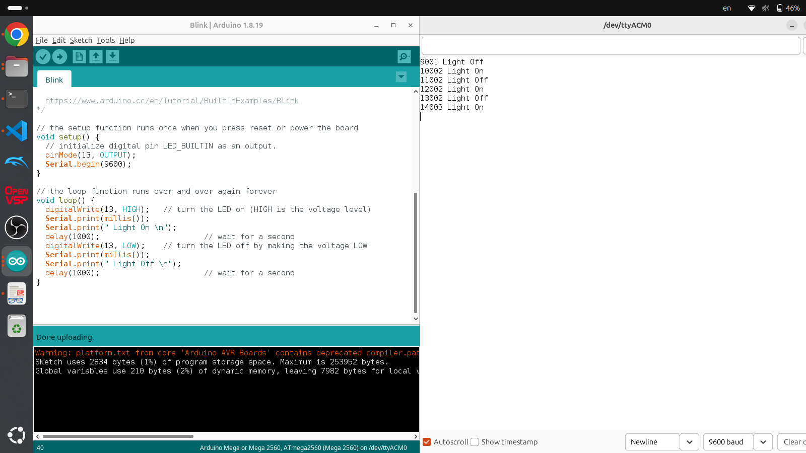

Section 6.3 Setting up an Arduino
Setting up the Arduino is a bit different than the CPX/CPB family of microcontrollers. The main difference is that the code is done on your computer in the Arduino IDE and then sent or compiled to the Arduino. This means that the code from the Arduino is unrecoverable if you don’t have the code on your computer. It’s also a lot harder to debug code on the Arduino because it isn’t like CircuitPython where the language will tell you which line of code is incorrect. My strategy with coding on the Arduino is pretty archaic in that I like to add one line of code at a time and have a lot of print statements to see where the code fails. This won’t solve memory leaks or hardware issues but it does help a bit. In this section we will dive into getting the blink code to work. The pro of using an Arduino is highlighted here in that the only setup is in the IDE itself. To start you just plug in your Arduino to your laptop and then open the Arduino IDE.

When you open the Arduino IDE for the first time the window will open up with the void setup() routine and the void loop() routine. The setup routine runs once and is where all the one time setup code goes. The loop routine runs over and over again and never stops and unlike the CPX/CPB you can never stop it unless you have a line of code that stops the code automatically. To start programming on your microcontroller you first need to select the Tools>Board, Processor and Port. The Board depends on the kind of board you purchased. For example, I purchased the Arduino MEGA so I selected Mega for the Board and Processor but you might have to select UNO if you’re using an Arduino UNO. The Port is the serial port that the Arduino is connected to. Since I’m on Linux the port the Arduino is connected to is /dev/ttyACMO while it would be COM3 or something similar on Windows or /dev/tty.usbmodem14101 on Mac. This is shown in the Figure above. When you’re ready to code the blink example the easy part is that the code for that is already included in the examples in the Arduino IDE. To do that click File>Examples>01.Basics>Blink

The figure above shows the code for blinking the LED connected to pin 13. The Arduino UNO/MEGA and also the CPX/CPB all share the same default LED on pin 13. The default example program will say LED_BUILTIN but I changed the pin to pin 13 to be more specific. The code is pretty straightforward where the setup routine makes pin 13 an output pin using the pinMode() function and then the loop routine sets pin 13 to HIGH and LOW using the digitalWrite() function with a delay function used to pause for 1000 ms or 1 second. In this case HIGH is on and LOW is off. If you click the Upload button which looks like a right arrow the code will be compiled to binary and then uploaded to the Arduino. If it’s working properly the LED on pin 13 will blink.

Again there isn’t a lot of ability to debug if it isn’t working right. Note that if you want to save this code you must click Save and then save the .ino file to somewhere on your computer. If you want to share code you can’t just give someone your Arduino, you have to send them the code because the code is unrecoverable from the binary format on the Arduino itself. As for the code itself, the // is used for comments and semicolons ; are used to end every single line. Unlike python you don’t need to worry about tabs to be setup properly. Loops and if statements are separated by brackets { and }.

As I mentioned however, it’s possible to add many print statements to the code and open up the Serial Monitor. The figure above shows the edited code with Serial.begin(9600) added to the setup routine which opens up serial communication between your computer and the Arduino at a baud rate of 9600 bits per second. In the loop routine I have added many Serial.print(""); commands to print to the Serial monitor which can be opened by clicking the button that looks like a magnifying glass. Make sure the baud rate in the serial monitor is set to the same 9600 value or the values will be gibberish. Also millis() is the internal timer on all Arduinos that output time in milliseconds. Note because this program is so simple, the code is left to the student to recreate.